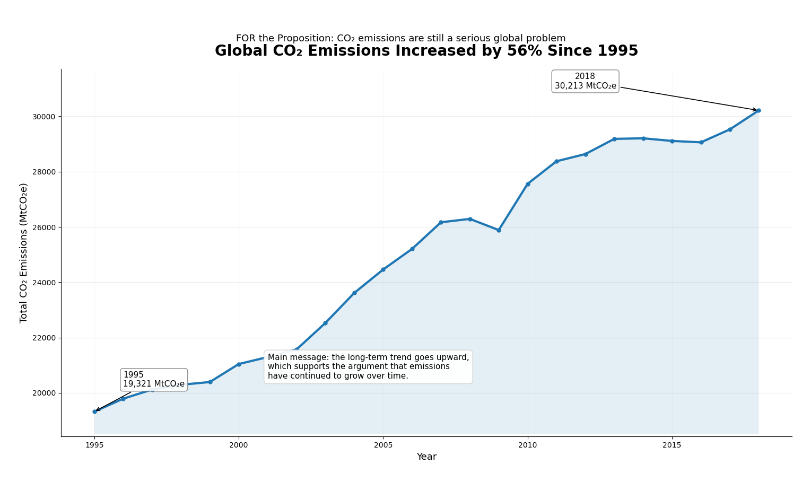
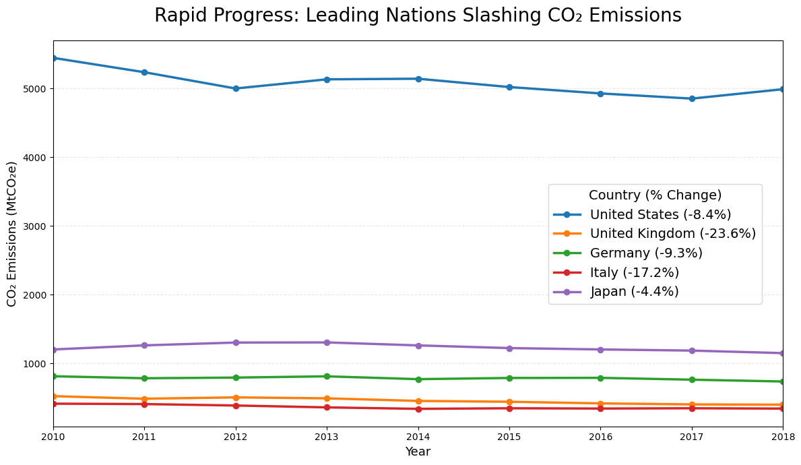

Proposition: CO₂ emissions are still a serious global problem
FOR the Proposition

Design Decisions and Rationale:
- I used a line chart because CO₂ emissions are measured across years, and a line makes the long-term trend easy to follow.
- I used a filled area under the line to make the overall growth feel larger and more visually persuasive.
- I added labels for the first and last values so viewers can quickly compare the change from 1995 to 2018.
AGAINST the Proposition

Design Decisions and Rationale:
- Persuasive title which pushes the point forward - the selected countries are global leaders and have all reduced their CO2 emissions since 2010.
- Key with labeled percentage drops to indicate to the reader that the lines haven't just plateaued but decreased as well.
- The y-axis starts from 0 for the reader to make comparisons between countries and to emphasize the plateaus.
Final Reflection
The two groups of visualizations provide two differing arguments despite coming from the same dataset. Side A argues that CO2 emissions are seeing a rapid growth, while Side B argues that emissions are actually relatively stable and proportionate to economic development. These differing visualizations which could urge a reader to think a certain way were intentionally modified with deceptive techniques to push a certain narrative. For Side A, the years included spanned 1995-present, allowing to see a greater pattern of increasing emissions over time. The y-axis is also stretched to include both extreme datapoints from 1995 & present to make the slope look almost linearly increasing. For Side B, a more limited range of years is presented, resulting in a much smaller y-axis range. Because of this, the reader can notice a plateau around 2013-2016, which in this visualization, takes up a significant section of the timeline. For this side in particular, China was notably removed from the reported countries, as it had the highest slope in the Side A visualizations. The change in wording in the plot titles is also significant - Side A aims to report the highest emitters, while Side B is more selective and reports the emissions of “Several” major economies. Including the United States also “clamps” the slopes of the other emitters and makes slope increases of other countries less visible - fitting for Side B. Since we’re aware of the realities of climate change, it would be interesting to take Side B for this assignment to challenge ourselves to create a visualization arguing against our own beliefs.